Martı uygulaması, sürükle bırak kodlama kartlarını kullanarak veri işleyebileceğin ve görselleştirebileceğin bir platformdur. Uygulamayı açtığında aşağıdaki arayüzle karşılaşacaksın.
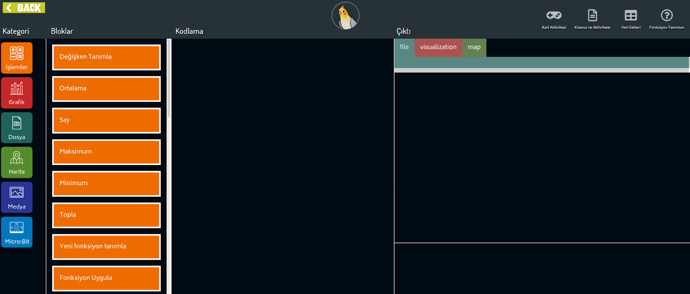
Martı ile veri işlerken, Bloklar alanında gördüğün kodlama kart bloklarını kodlama alanına sürükleyerek kartların açılmasını sağlarsın. Örneğin değişken tanımla kartını sürükleyip, Kodlama alanına bıraktığımızda "İsim" ve "Değer" girdilerini girebileceğin bir alan açılacaktır.
Kategori alanında gördüğün simgelere tıklayarak bloklar arasında hızlıca gezebilirsin. Her bir kategori farklı Çıktı sekmeleri arasında da dolaşmanı sağlar. Örneğin, eğer bir dosya açacaksan bu dosyanın içindeki değerleri Çıktı alanındaki "Dosya" sekmesinde görürsün. Eğer bir grafik çizmek istersen, bu grafiği "Görselleştirme" sekmesinde görürsün.
Şimdi örnek bir aktivite ile Martı'nın veri toplama, işleme ve görselleştirme mekanizmalarını tanıyalım.
Bu aktivitede, sınıf içinde toplanan farklı verilerin Martı uygulaması ile nasıl ifade edilebileceğini ve nasıl görselleştirilebileceğini öğreneceksin. Aktivite boyunca, farklı matematiksel işlemlerin verilerle oynamak için nasıl kullanılacağını ve Martı'daki olası uygulamalarını göreceksin.
Aşağıdaki tablo, bir sınıfta gerçekleştirilen anket sonucunda toplanan verilerinin bir kısmını göstermektedir.
Ad |
Yaş |
Cinsiyet |
Favori Renk |
Ahmet |
9 |
Erkek |
Yeşil |
Leyla |
10 |
Kız |
Turuncu |
Cansu |
9 |
Kız |
Yeşil |
Hakan |
10 |
Erkek |
Turuncu |
... |
... |
... |
... |
Bu tablonun hazırlanmasının amacı, sınıftaki öğrencilerin yaş ve cinsiyet dağılımında göre favori renklerindeki trendi göstermektir. Acaba, yaş veya cinsiyetin favori renk seçimine bir tercihi var mıdır, yoksa tamamen alakasız mıdır?
Tabloda yaş ve cinsiyete göre bir analiz yaptığımızda, cinsiyete göre bir renk tercihi gözlemlenmediğini fark edebiliriz. Ama 9 yaşındaki öğrenciler yeşil rengi tercih ederken, 10 yaşındaki öğrenciler turuncu rengi tercih etmiştir.
Ama bu anket sonucuna göre, Türkiye'deki tüm 9 yaşındaki çocuklar yeşil rengi tercih eder diyebilir miyiz? Tabii ki, diyemeyiz. Çünkü, anketi sunduğumuz topluluk hem çok az sayıda insandan oluşuyor hem de aynı sınıfta oldukları için birbirlerinden etkilnmeye müsaitler.
Bir anketin sonucunun ölçeklenebilir olması için, anketin genelleneceği alan için dağınık toplanması ve sonuçların ölçeklenebilmesini mantıklı kılacak kadar çok kişiye uygulanması gerekmektedir.
Şimdi yapacağımız aktivitede benzer bir tabloyu kendi sınıfımız için dolduracağız. Temel veri operasyonlarını ve farklı veri tiplerinin sonuçlarını yansıtmayı Martı uygulaması ile nasıl yapacağımızı öğreneceğiz.
Ad, yaş, cinsiyet ve favori renk sütunlarını içeren bir tabloyu boş bir kağıda çizelim. (Aşağıdaki butona tıklandığında açılan örnek veri toplama sayfasını da kullanabilirsin ve "Favori Renk" verisi toplamak yerine "Evcil Hayvan", "Favori Spor" gibi sınıfın daha çok ilgisini çekebilecek soruları sorabilirsin).
Hazırladığımız tabloyu, sınıftaki arkadaşlarımıza sorarak dolduralım.
Martı Arayüzüne Topladığımız Verileri Aktarma
Topladığımız veriler ile ne yapmak istediğimize bağlı olarak, tablomuzu iki farklı yöntem ile kaydedebiliriz:
Değişken Tanımlama
Tablodaki her sütunu ayrı bir değişken kullanarak depolayabiliriz. Değişken, sahip olduğumuz verileri bir süreliğine depolamak ve bunu programlama ortamında kullanabilmek için tanımladığımız semboldür. Martı arayüzünde değişken tanımlamak için, değişken tanımla kutusunu, kodlama alanına sürükleyelim. Sınıfın en sevdiği renkleri tanımlamak için "sınıfın renkleri" adlı bir değişken tanımlayalım:
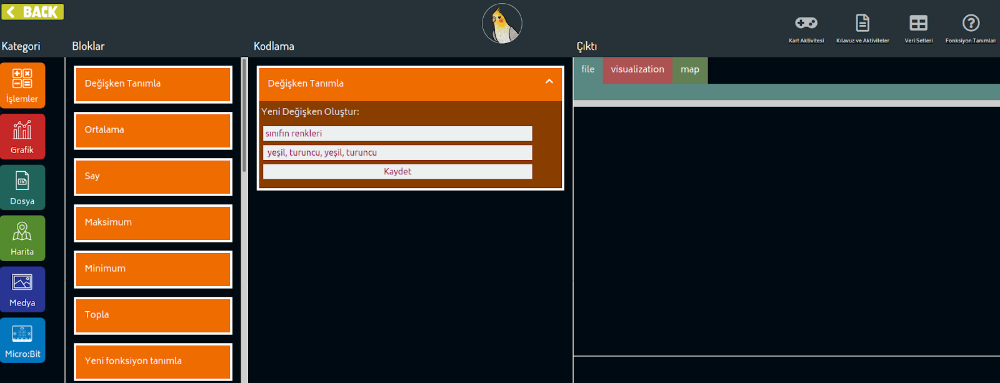
Yukarıdaki şekilde, örnek tablomuzda olan renkleri değişkene kaydettiğimiz an gösteriliyor. Kaydet butonuna bastığımızda, ekranın alt kısmında bir onaylama metni çıkacak. Bu onaylama kutusunda, tanımlanan değişkenin kaydedildiği söyleniyorsa, her şey yolunda demektir.
Tablo Oluşturma
Renk verisi ile beraber isim, uğurlu sayı, şehir gibi verileri de kaydetmek istiyorsak ne yapmalıyız?
Eğer oluştuduğumuz tüm tabloyu aynı anda Martı'ya aktarmak istiyorsak, Dosya kategorisinden Tablo Oluştur bloğunu kodlama alanına sürükleyelim.
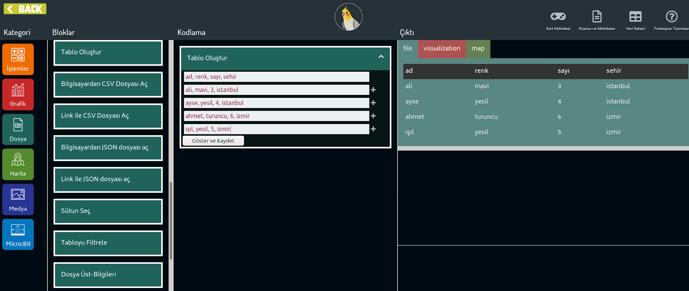
Tablo oluşturmak istediğimizde, doldurmamız gereken ilk satır tablodaki verilerin ne olduğunu gösteren başlıklardır. Başlıkları ve doldurduğumuz tüm verileri virgül (,) ile ayırarak doldurmamız gerekmektedir. Yukarıdaki örnekte, dört kişilik bir grubun, adı, favori renk ve sayıları ve doğdukları şehirler kaydedilmiştir.
"Tablo Oluştur" kodlama kartı ile kaydettiğimiz verileri anında görebilmek için "Tablodan Grafik Çiz" komutunu kullanabilriz. Martı ile üç tip veri görselleştirmesi yapabiliriz: Çizgi (line), Daire (pie) ve Sütun (bar)
Yaş ve Uzunluk arasındaki ilişkiyi çizgi veya bar grafiği ile göstermek yaş arttıkça boyun nasıl değiştiğini göstermek için güzel bir yol olabilir. Önce çizgi grafiğini denemek için, seçim menüsünden "çizgi" grafiğini seçin. Ardından grafiği diğer insanlara gösterdiğimizde tam olarak ne grafiği olduğunu net olarak açıklayan bir başlık girin.
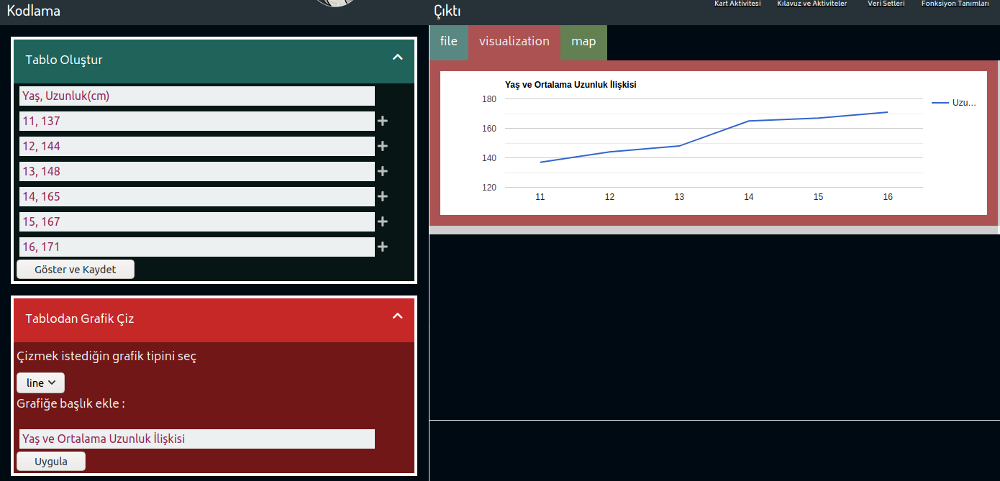
Grafikleri hızlıca değiştirmek için kart üzerinden çizgi yerine sütun grafiğini işaretleyebilirsiniz.
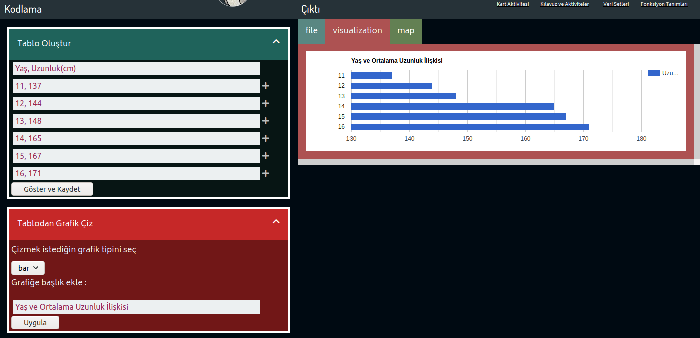
Değişkenleri Kullanarak Veri Görselleştirme
Tabloda iki sütun olduğunda Tablodan Grafik Çiz kartını kullanarak hızlı bir veri görselleştirme yapabiliriz. Tabloda daha fazla sütun olduğunda veya farklı değişkenleri grafiğe katmak istediğimizde Değişken ile Grafik Çiz kartı bize yardımcı olacaktır.
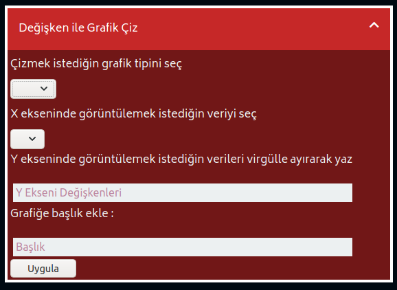
Kartı kullanarak 4 adımda çizgi, pasta veya çubuk grafiklerinden birini çizebiliriz.
- Grafik tipini seç.
- X ekseninde, yani yatay eksende olmasını istediğin değerler için bir değişken belirle
- Y ekseninde, yani dikey eksende birden fazla değişkeni aynı anda görüntüleyebilirsin. Eğer birden fazla değişkeni aynı anda göstermek istersen bunları virgül ile ayırabilirsin.
- Grafiğin iletişimini doğru kurmak için açıklayıcı bir başlık belirle.
Şu ana kadar verdiğimiz tüm örnekler sayısal değerlerin görselleştirmesini kapsıyordu. Seçeceğimiz veri görselleştirme yöntemi, ne tip bir veriyi aktaracağımıza bağlıdır. Örneğin, veri setimizde şehirler varsa, verilerimizi harita üzerinde göstermek mantıklı olabilir. Şehirlere göre, favori renk dağılımını göstermek istiyorsak, bu şehirleri o renge boyayarak, bir bakışta tüm verimizi anlatmış oluruz.
Veri görselleştirme doğru kullanıldığında çok güçlü bir araç olabilir. Çünkü, çok uzun okumalar ve analizler gerektiren verilerin hızlıca karşımızdakine aktarılmasını sağlar. Farklı malzemeler ve farklı görselleştirme araçları kullanarak, bu gücü sınıflarımıza da yansıtabiliriz. Öğrencilerin hem yaratıcılıklarını geliştirecek hem de veri bilimini anlatacak afişler hazırlamaları konusunda teşvik edebiliriz.
Veri görselleştirmenin bu çeşitliliğini desteklemek adına Martı arayüzü ile başlayarak, farklı görselleştirmeleri farklı materyaller ile nasıl geliştirebileceğimizi de bu aktivitede deneyimleyeceğiz.
Temel elektronik bilgisi ile başlayalım;
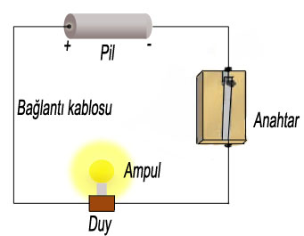
Fen bilgisi dersinden hatırlayacağın bu basit devre, elektrik enerjisini sağlayan pil, ışık veren ampül ve ışığın açılıp kapanmasını sağlayan anahtardan oluşur. Yıllara göre değişimi göstermek için kaydırabileceğimiz bir butonu olan elektronik devremiz de tamamen bu şekilden oluşur. Son ürün aşağıdaki gibi çalışacak:
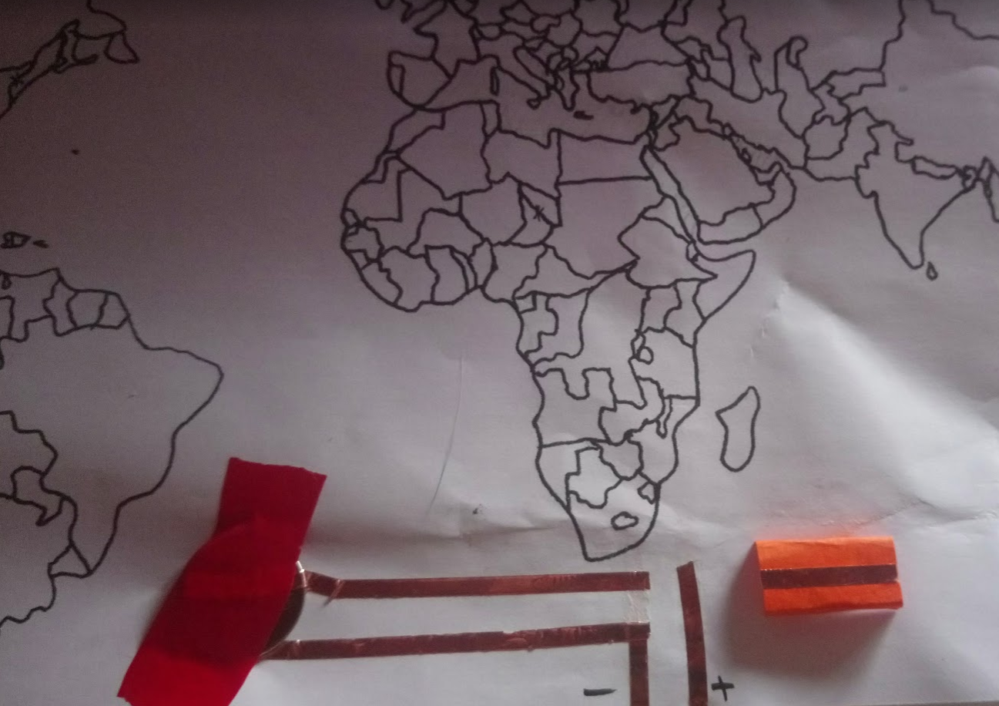 |
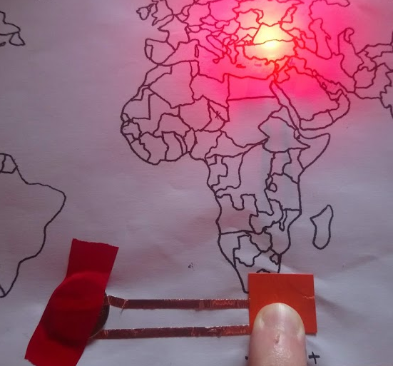 |
Turuncu buton, + uçtan elektriği tamamlayacak bir anahtar görevi görecek, böylece bir zaman aralığı boyunca butonu kaydırdığımızda, boş olan yerlerden geçerken, istediğimiz ışıklar yanacak.
Bunun için kağıdın arka kısmına LED ve devremizi devam ettirecek bakır kabloları yapıştıralım:
|

Bu basit devreyi, bir ülkedeki bir yıldan itibaren gözlenen değişimler için kullanabiliriz. Peki, sadece bir yıl için değil de, yıllar boyu bir değişimi aktarmak istediğimizde ne yapmalıyız?
Örnek bir aktivite olarak, ülkelerin yüzölçümlerine oranla sahip oldukları ormanlık alanlarının yıllara göre değişimini görselleştirelim.
Bu aktivitede FIFA18 oyununda potansiyeli en yüksek 100 oyunculardan istediğimiz özelliklerde olanları harita üzerinde nasıl gösterebileceğimizi keşfedeceğiz. Verileri, analiz yöntemlerini, görselleştirme tekniklerini ve farklı problemler için verileri nasıl sunacağımızı öğreneceğiz.
İndireceğimiz veri setinin her bir satırında, futbolcuların ad, yaş, ülke, kulüp bilgileri ve gösterdikleri performansa bağlı olarak hesaplanmış puan ve potansiyel bilgileri bulunmaktadır.
Ad |
Yaş |
Ülke |
Puan |
Potansiyel |
Kulüp |
C. Ronaldo |
34 |
Portugal |
94 |
94 |
Real Madrid CF |
L. Messi |
30 |
Argentina |
93 |
93 |
FC Barcelona |
F. Muslera |
31 |
Uruguay |
82 |
82 |
Galatasaray SK |
M. Neuer |
31 |
Germany |
92 |
92 |
FC Bayern Munich |
R. Lewandowski |
28 |
Poland |
91 |
91 |
FC Bayern Munich |
E. Hazard |
26 |
Belgium |
90 |
91 |
Chelsea |
... |
... |
... |
... |
... |
... |
(Yukarıdaki tablo, futbolcu verilerinin bir kısmını göstermektedir. Verilerin tamamını burada paylaşsaydık 10 sayfadan fazla yer kaplayacaktı)
Veri Setini İndir ve Görüntüle
Martı uygulamasının sağ üst köşesindeki navigasyon alanındaki "Veri Setleri"butonuna tıklayın.
Girdiğimiz sitede aktiviteler için kullanacağımız farklı veri setlerini bulabilirsin. Futbolcu verilerini seçmek indirmek için FIFA18 Furbolcuları başlıklı karttaki indir linkine tıklayalım. Bilgisayarımıza indirdiğimiz verileri, kodlama alanına aktarmak için Dosya > Bilgisayardan CSV Dosyası Seç kod bloğunu kodlama alanına sürükleyelim. Dosya Seç butonuna tıklayıp, dosyayı seçtikten sonra Çıktı Alanında açtığınız dosyadaki verileri göreceksiniz.
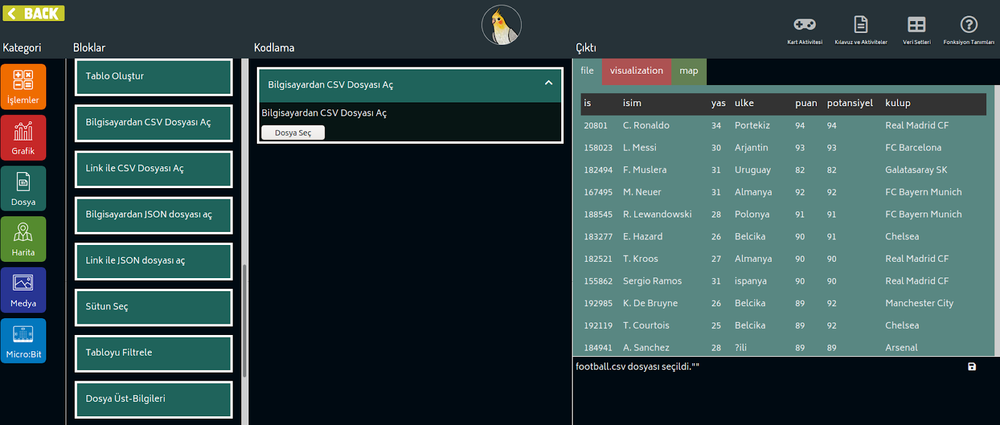
Programlama yaparak, birçok işlemi kolaylıkla gerçekleştirebiliriz. Örneğin, ülkelerin çıkardığı oyuncuların yaş ortalamasını merak ediyoruz. Ve bunu bir grafik ile göstermek istiyoruz.
Ad |
Yaş |
Ülke |
Puan |
Potansiyel |
Kulüp |
C. Ronaldo |
34 |
Portugal |
94 |
94 |
Real Madrid CF |
L. Messi |
30 |
Argentina |
93 |
93 |
FC Barcelona |
Bruno Fernandes |
34 |
Portugal |
78 |
85 |
Sporting CP |
P. Dybala |
23 |
Argentina |
88 |
93 |
Juventus |
K. De Bruyne |
26 |
Belgium |
89 |
92 |
Manchester City |
T. Courtois |
25 |
Belgium |
89 |
92 |
Chelsea |
Altı satırlık bir tablodan 29 yaş üstü oyuncuları belirleyip, bu oyuncular ile ilgili bir grafiği çizmek mümkündür. Peki, bu grafiği 100 oyunculu bir liste için yapmak ne kadar zamanını alırdı? Ya da tabloda 10000 oyuncu olsaydı kaç dakikamızı alırdı?
İşte bu tarz problemler için, küçük bir kod parçası yazarak işimizi kolaylaştırabiliriz. Bu aktivitemiz sırasında, açtığımız sitedeki programlama arayüzünü kullanarak, 100 oyunculu veri setimizde bu işlemi gerçekleştireceğiz.
Tabloyu Filtrele
Dosya kategorisinde olan Tabloyu Filtrele kodlama bloğunu Kodlama alanına sürükleyip bırakalım. Filtre işlemini bir çay süzgecinin çalışma mekanizmasına benzetebiliriz. Nasıl çay süzgecinde, çay filizlerinin kalmasını ve çayın özünü içeren suyun geçmesini istiyorsak, filtre işleminde de geçmesini istediğimiz verileri gireriz.
Kodlama alanına bıraktığımız kartta önce bir tablo seçmemiz gerekiyor. Futbolcu dosyasını açtığımızda Marti uygulaması bu dosyayı adı ile birlikte kaydeder. Tabloyu filtrelemek için önce filtrelemek istediğimiz tablonun adını seçmemiz gerekiyor.
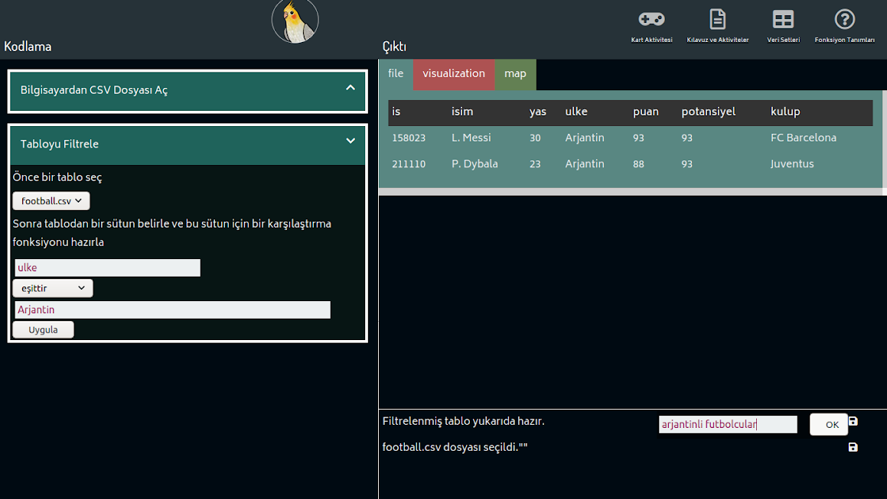
Tabloyu seçtikten sonra, bir karşılaştırma fonksiyonu yazmalıyız. Bu fonksiyonun sonucunda bir sütunun özelliklerine göre bir seçim yapılacak. Örneğin, yukarıdaki karşılaştırma fonksiyonunda ulke bloğunda "Arjantin" e eşit olan satırları bulmaya çalışıyoruz. Bu veri setinde Arjantinli iki futbolcu olduğunu hızlıca bulduk: Messi ve Dybala.
Şimdi farklı bir örnek yapalım. Yaşı 30'dan büyük olan futbolcuların bir listesini almaya çalışalım. Bu durumda sütun olarak "yas"'ı seçmemiz gerekiyor. Ardından işlem olarak büyüktür seçiyorum ve karşılaştırılacak değer olarak 30'u seçiyorum.
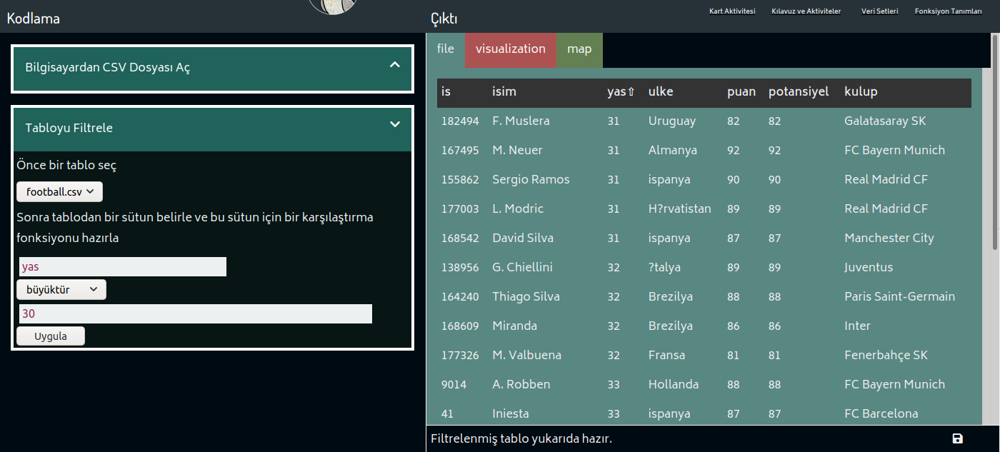
Çıkan Sonuçları Kaydet
Her operasyonunun sonunda, çıktı alanının alt parçasında bu veriyi kaydetmen için bir buton bulunmaktadır. Eğer filtrelenmiş tabloyu tekrardan kullanmak istiyorsan bu kaydet butonunun üzerine gelip sonucu kaydedebilirsin.
Kaydet butonunun üzerine geliyorum ve çıkan girdi alanına "30 yaşından büyük futbolcular" yazıyorum. Artık bu tabloyu ileride yapmak isteyeceğim işlemlerde kullanabilirim.
Filtrelenmiş Tablodan Sütun Seç
Bloklar arasından Sütun Seç'i Kodlama alanına sürüklüyorum. Kart içinde kaydettiğim değişkeni seçip ulke sütununu seçmek istediğimi belirtiyorum. Seçilen sütundaki ülkelerin isimlerini de bir değişken olarak kaydediyorum.
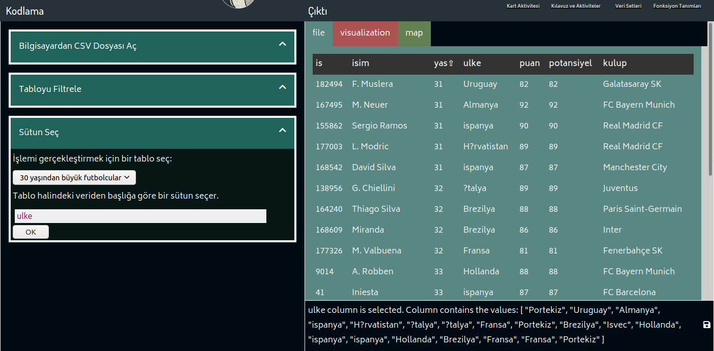
Ülkeleri Harita Üzerinde Göster
Kategoriler arasından Harita'ya tıkladığımızda görselleştirme alanındaki haritayı ve ilgili harita bloklarını göreceksin. işaretlemek için harita bölümünden İşaret Ekle bloğunu sürükleyelim.
İşaret ekle bloğunda seçtiğimiz sütunun kaydettiğimiz adını bulalım ve Uygula butonuna basalım.
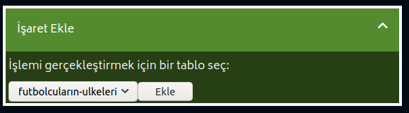 |
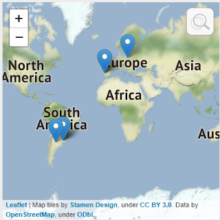 |
Bu aktivitede telefonlarımızı kullanarak bir fizik deneyi tasarlayacağız. Telefonlarımız, bulundurdukları sensörler sayesinde çevremizdeki fiziksel değişimleri kaydetmemize olanak verir. Bu aktivitemizde telefonun mikrofonu ile çarpan topun sesinin aralıkları ile farklı maddelere karşı gelişen hava direncini ölçeceğiz.
Açıklama
Veri: Bir araştırma sırasında veya bir problem çözümünde kullanılmak üzere toplanmış bilgidir.
Yapılacak aktivitede, aşağıdaki tablonun başlığında görünen farklı maddeler için zaman aralıklarına bağlı olarak çarpma sesinin ne zaman kaydedildiğinin verisini toplayacağız:
Tenis Topu |
Yastık Top |
Elastik Top |
|||
Uzaklık |
Geçen Zaman |
Ses Şiddeti |
Zaman |
Ses Şiddeti |
Zaman |
| ... | ... | ... | ... | ... | ... |
| ... | ... | ... | ... | ... | ... |
| ... | ... | ... | ... | ... | ... |
| ... | ... | ... | ... | ... | ... |
Tablodaki veriler ve önceden yapılan çalışmalardan edinilen bilgiler sayesinde, bir topa uygulanan hava direncini rahatlıkla hesaplayabiliriz.
Bir topu hiçbir ek kuvvet uygulamadan elimizden bıraktığımızda her saniye hızı ve yüksekliği aşağıdaki gibi değişir:
yükseklik (m) = 0.5 x yerçekimi ivmesi (m/s2) x zaman2 (s)
hız (m/s) = yerçekimi ivmesi (m/s2) x saniye (s)
Bu formüllere göre bir top bırakıldığından yere çarptığı zamana kadar 3 saniye geçiyorsa, o top 45 metre yükseklikten bırakılmıştır. Bu formülde kütleye bağlı olarak bir parametre görmeyiz. Yani aslında 45 metre yükseklikten bırakılan bir tüy ile bir demir topun aynı anda yüzeye düşmesini beklemeliyiz. Ama günlük yaşantımızda böyle bir şeye rastlamamız olanaksız. Bunun sebebi, hava dolu bir ortamda, tüy gibi hafif ve yassı bir cismin çok hava direncine karşı zayıf olmasıdır.
Aşağıdaki Youtube videosunda tamamen havası boşaltılmış bir ortamda, aynı anda bırakılan tüy ve demir topun düşüşlerini gösteren deneyi bulabilirsin. Video linki deneyin tam başlama anınına götürüyor. Açtığın anda deney başlayacak, dikkatli izle:
Artık formüllere olan güvenimizi kazandığımıza göre, hava direnci kodlayarak hesapayacağımız aktivitemize başlayabiliriz:
Sensörler ile Veri Toplama
Bu aktivitede telefonumuz yardımı ile veri toplayacağız. Telefonumuza phyphox uygulamasını indirdikten sonra, aşağıdaki videoyu izleyelim.
Topladığımız verileri, "Tablo Oluştur" kartı ile kaydedelim. Eğer veri toplamak için gerekli imkanlara sahip değilsek, aşağıdaki örnek tabloyu kullanabiliriz.
Uzaklık |
Düşüşe Başlangıç |
Düşüş Bitiş |
0.1 |
1.6 |
1.8 |
0.25 |
2.87 |
3.1 |
0.4 |
0.52 |
0.82 |
0.55 |
1.78 |
2.09 |
0.7 |
3.2 |
3.6 |
0.85 |
3.51 |
3.94 |
1 |
1.27 |
1.72 |
1.15 |
0.6 |
1.1 |
1.3 |
5.2 |
5.73 |
1.45 |
0.82 |
1.38 |
1.6 |
1.6 |
2.17 |